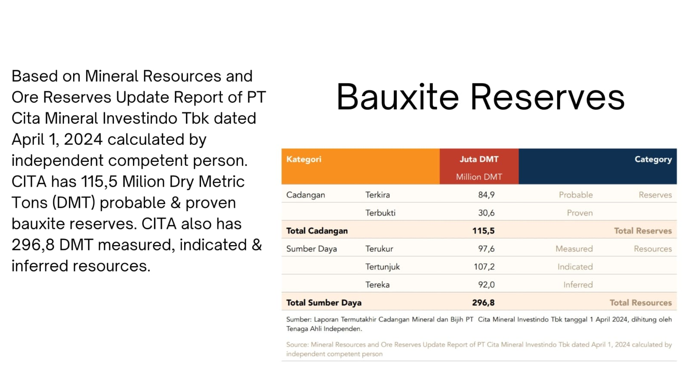
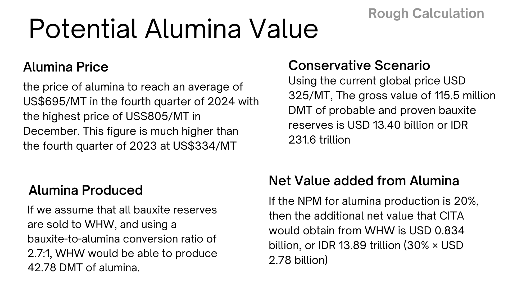

Investment Insight: PT Cita Mineral Investindo Tbk (CITA) – Beyond Bauxite Mining
Executive Summary
As global aluminum prices reached a 4-year high in January 2026, CITA is positioned as a unique play in the metals sector. While often categorized solely as an upstream bauxite miner, CITA’s true profitability is now driven by its downstream "money machines" through associate entities (WHW and KAI), rather than just raw ore sales.
1. Market Context: The Aluminum Bull Run (H2 2025 – Jan 2026)
The aluminum market has experienced significant structural tightness over the last six months:
Price Surge: Since mid-2025, aluminum prices have steadily climbed from approximately USD 2,500/MT to peaks near USD 3,300/MT in January 2026.
Supply Scarcity: Bullish scenarios predicted by analysts have materialized due to structural tightness in the global market.
Demand Drivers: Increased demand from the electric vehicle (EV) sector and solar panel manufacturing has created a persistent deficit, keeping prices elevated.
Impact on CITA: This macro trend directly enhances the valuation of CITA’s downstream assets, particularly its stake in the aluminum smelter (KAI) which is expected to produce 500,000 tons of aluminum per year starting in 2026.
2. Deep Dive & Narrative Correction: Fact vs. "Rough Calculation"
While the presentation slides offer an optimistic outlook, a professional investor must distinguish between theoretical potential and financial reality.

Source: CITA Annual Report
A. The "Gross Value" Illusion

Slide Analysis: The slides present a "Potential Value" of up to USD 60.96 billion (over IDR 1,000 trillion) based on total bauxite reserves.
Correction: It is critical not to confuse "Gross Value" with Company Valuation. A mining company is never valued based on the total theoretical sales price of its ground reserves, but rather on its annual Cash Flow and monetizing capability.
The Reality: The IDR 1,000 trillion figure is a theoretical maximum revenue over decades. The real focus should be on the "Current Net Profit," which soared by 246% to IDR 2.49 trillion despite a slight decline in production and sales volume.
B. The Value of Downstream Associates
CITA’s intrinsic value lies in its strategic ownership of downstream facilities:
Alumina (WHW – 30% stake): This refinery has been operating with a capacity of 2 million tons of alumina per year. It serves as a primary "cash cow," with CITA benefiting from the net profit of this associate rather than direct operations.
Aluminium (KAI – 12.5% stake): With production starting in 2026, this is the next major growth catalyst. At current aluminum prices above USD 3,000/MT, smelter margins are significantly thicker than those of raw bauxite or alumina.
3. Valuation Summary & Strategy
Based on the current data (Market Cap IDR 16.356 trillion, PER 5.50x, PBV 1.95x):
Current Status: CITA appears undervalued relative to its growth trajectory. A Price-to-Earnings (PER) ratio of 5.50x is exceptionally low for a company recording triple-digit profit growth (246%).
Upside Potential: The market has likely not fully "priced in" the contributions from the KAI aluminum smelter.
Risks to Watch: Potential negatives include unstable operating cash flow and oversupply in the broader commodity market leading to falling prices.
Bottom Line: CITA should be viewed as the most affordable proxy for downstream aluminum and alumina refining in Indonesia. Its value is anchored by the 115.5 million DMT of probable and proven bauxite reserves which provide the essential feedstock for its high-margin downstream associates.
This reflects my personal investment decision and perspective. It is not intended as investment advice or a recommendation to buy, sell, or hold any securities. Investing in the capital market involves significant risks, including the potential loss of capital. Each investor should conduct their own research and make decisions according to their individual risk tolerance and financial circumstances.
Ringkasan Eksekutif
Seiring harga aluminium global mencapai level tertinggi 4 tahun pada Januari 2026, CITA diposisikan sebagai pilihan investasi yang unik di sektor logam. Meski sering dikategorikan semata-mata sebagai penambang bauksit hulu, profitabilitas sejati CITA kini digerakkan oleh "mesin uang" hilir melalui entitas asosiasi (WHW dan KAI), bukan sekadar penjualan bijih mentah.
1. Konteks Pasar: Bull Run Aluminium (H2 2025 – Jan 2026)
Pasar aluminium mengalami ketegangan struktural yang signifikan selama enam bulan terakhir:
Lonjakan Harga: Sejak pertengahan 2025, harga aluminium terus naik dari sekitar USD 2.500/MT hingga mencapai puncak sekitar USD 3.300/MT pada Januari 2026.
Kelangkaan Pasokan: Skenario bullish yang diprediksi para analis telah terwujud akibat ketegangan struktural di pasar global.
Pendorong Permintaan: Meningkatnya permintaan dari sektor kendaraan listrik (EV) dan manufaktur panel surya menciptakan defisit yang persisten, menjaga harga tetap tinggi.
Dampak terhadap CITA: Tren makro ini secara langsung meningkatkan valuasi aset hilir CITA, khususnya kepemilikannya di smelter aluminium (KAI) yang diperkirakan akan memproduksi 500.000 ton aluminium per tahun mulai 2026.
2. Tinjauan Mendalam & Koreksi Narasi: Fakta vs. "Kalkulasi Kasar"
Meskipun slide presentasi menawarkan prospek yang optimis, seorang investor profesional harus membedakan antara potensi teoretis dan realitas keuangan.
Sumber: Laporan Tahunan CITA
A. Ilusi "Nilai Kotor"
Analisis Slide: Slide menyajikan "Nilai Potensial" hingga USD 60,96 miliar (lebih dari Rp 1.000 triliun) berdasarkan total cadangan bauksit.
Koreksi: Sangat penting untuk tidak mengacaukan "Nilai Kotor" dengan Valuasi Perusahaan. Sebuah perusahaan pertambangan tidak pernah dinilai berdasarkan total harga jual teoritis cadangan di tanah, melainkan berdasarkan Arus Kas tahunan dan kemampuan monetisasinya.
Realita: Angka Rp 1.000 triliun adalah pendapatan maksimum teoritis selama beberapa dekade. Fokus nyata seharusnya pada "Laba Bersih Saat Ini," yang melonjak 246% menjadi Rp 2,49 triliun meskipun volume produksi dan penjualan sedikit menurun.
B. Nilai Asosiasi Hilir
Nilai intrinsik CITA terletak pada kepemilikan strategisnya di fasilitas hilir:
Alumina (WHW – kepemilikan 30%): Kilang ini telah beroperasi dengan kapasitas 2 juta ton alumina per tahun. Ini berfungsi sebagai "sapi perah" utama, dengan CITA mendapat manfaat dari laba bersih asosiasi ini, bukan operasi langsung.
Aluminium (KAI – kepemilikan 12,5%): Dengan produksi dimulai pada 2026, ini adalah katalis pertumbuhan utama berikutnya. Pada harga aluminium saat ini di atas USD 3.000/MT, margin smelter jauh lebih tebal dibandingkan bauksit mentah atau alumina.
3. Ringkasan Valuasi & Strategi
Berdasarkan data saat ini (Kapitalisasi Pasar Rp 16,356 triliun, PER 5,50x, PBV 1,95x):
Status Saat Ini: CITA tampak undervalued relatif terhadap trajektori pertumbuhannya. Rasio Price-to-Earnings (PER) 5,50x sangat rendah untuk perusahaan yang mencatatkan pertumbuhan laba tiga digit (246%).
Potensi Kenaikan: Pasar kemungkinan belum sepenuhnya "memperhitungkan" kontribusi dari smelter aluminium KAI.
Risiko yang Perlu Diwaspadai: Potensi negatif meliputi arus kas operasional yang tidak stabil dan kelebihan pasokan di pasar komoditas yang lebih luas yang menyebabkan harga turun.
Kesimpulan: CITA harus dipandang sebagai proxy paling terjangkau untuk pemurnian aluminium dan alumina hilir di Indonesia. Nilainya ditopang oleh 115,5 juta DMT cadangan bauksit probable dan proven yang menyediakan bahan baku penting bagi asosiasi hilirnya bermargin tinggi.
Tulisan ini mencerminkan keputusan dan perspektif investasi pribadi saya. Ini tidak dimaksudkan sebagai saran investasi atau rekomendasi untuk membeli, menjual, atau menahan efek apa pun. Berinvestasi di pasar modal melibatkan risiko signifikan, termasuk potensi kerugian modal. Setiap investor harus melakukan riset sendiri dan membuat keputusan sesuai toleransi risiko dan kondisi keuangan masing-masing.